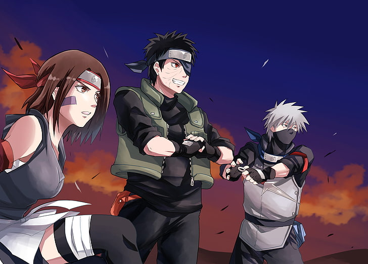

obito
"Uchiha"
is another way of pronouncing "uchiwa" (団扇, paper fan), which is the clan's symbol. Uchiwa can be used to fan flames, making the flame hotter — referring to the fact that the Uchiha is a clan of Fire Release users

click hear..!